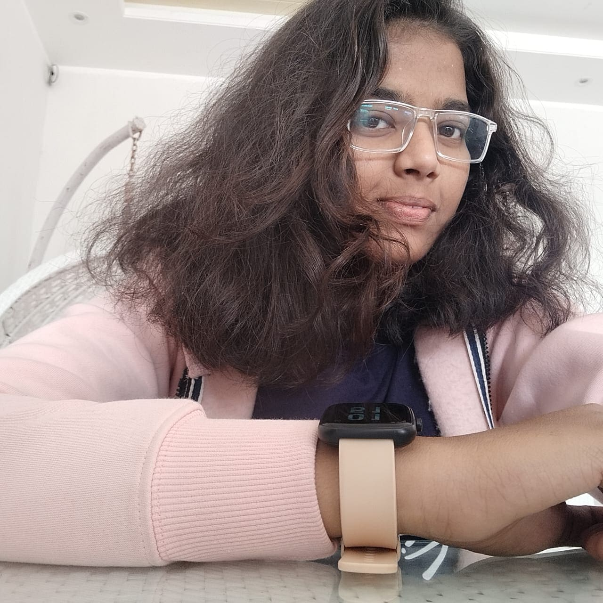

Varshini Gopi
Web Developer

About me
Hello,everyone. I'm Varshini Gopi. I am a sophomore in the Department of
Mathematics and Computing at Indian Institute of Technology(IIT),Ropar. I
am a tech enthusiast.I love reading books and watching movies
Languages known
- Telugu
- Hindi
- English
Work Experience
- Founder:- Project C (2023-)
- Volunteer:- PES(2023-)
- Executive:- Fincom (2022-2023)
Skills
- C Programming
- HTML
- CSS
- Communication
- Leadership
Awards
- Sakshi Bala Editor 2020
- 2nd Place in Social Talent Test
Certifications
- Introduction in Social Media Marketing from Coursea
Contact Me